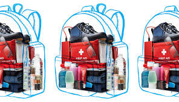

Resources: Information, Reviews, Sources and More!

- Food and Water
- Flashlight/Headlamp
- First Aid Kit
- Personal Sanitation Items: Wipes, toilet paper, menstral supplies, and toothbrush are the minimum.
- Dust Mask and Bandana
- Cell Phone and Charger
- Paper Maps, Paper & Sharpie
- Small Tool Kit: Sturdy work gloves and basic tools will come in handy.
- Special Needs Items: Make sure to include prescription medications, glasses, medical devices, or other special needs items.
- Change of Clothes
- Cash
- Waterproof Matches/Lighter
- Copies of Important Documents
- Space Blanket & Large Garbage Bags